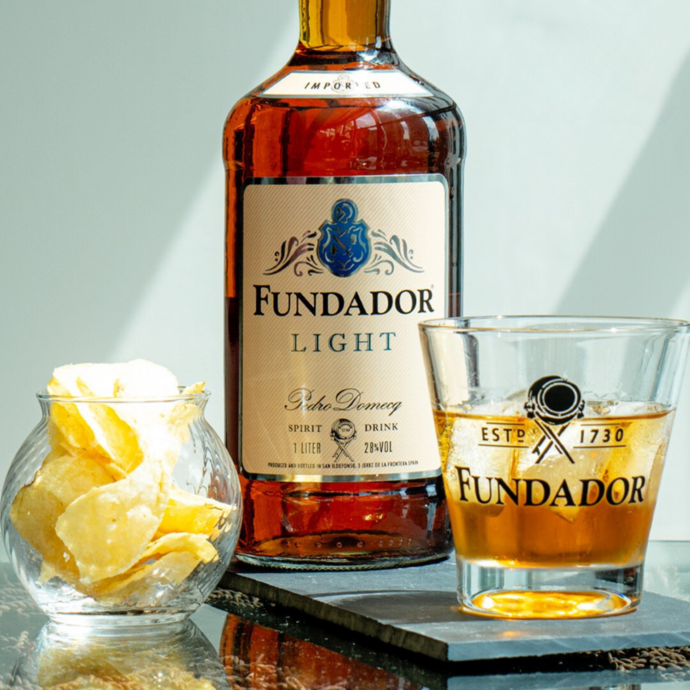
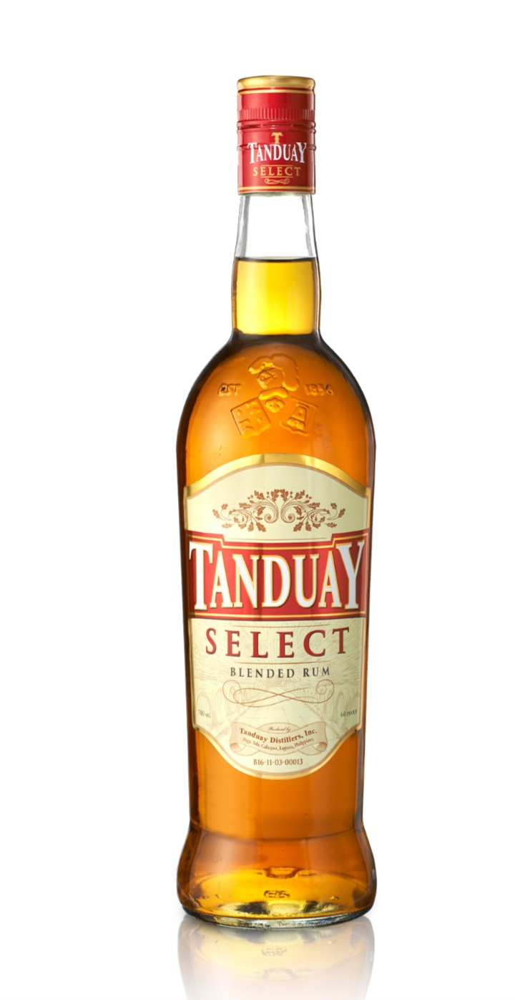

FUNDADOR (Super Special)

Fundador Super Special offers a rich, velvety Spanish brandy with a smooth and elegant finish. It has no fat, no cholesterol, and minimal sugars—giving it a clean, premium taste perfect for special gatherings, slow sipping, and sophisticated moments.
FUNDADOR (Ultra Smooth)

Fundador Ultra Smooth brings a refined and silky drinking experience with gentle warmth and subtle sweetness. Its clean profile—free from fat and cholesterol with minimal sugars—highlights its careful distillation, making it ideal for relaxed nights or elegant celebrations.
FUNDADOR (Light)

Fundador Light offers an easy-drinking, smooth brandy with a lighter body and mellow sweetness. With no fat, no cholesterol, and very minimal sugars, it delivers a refined taste that's gentle, clean, and never overwhelming.
TANDUAY(Select)

Tanduay Select is a smooth, easy-drinking rum with a clean, mellow sweetness that blends well with any chaser. Its refined flavor, balanced warmth, and reliable quality make it perfect for relaxed nights and simple gatherings, with a clean profile containing no fat, no cholesterol, and minimal sugars.